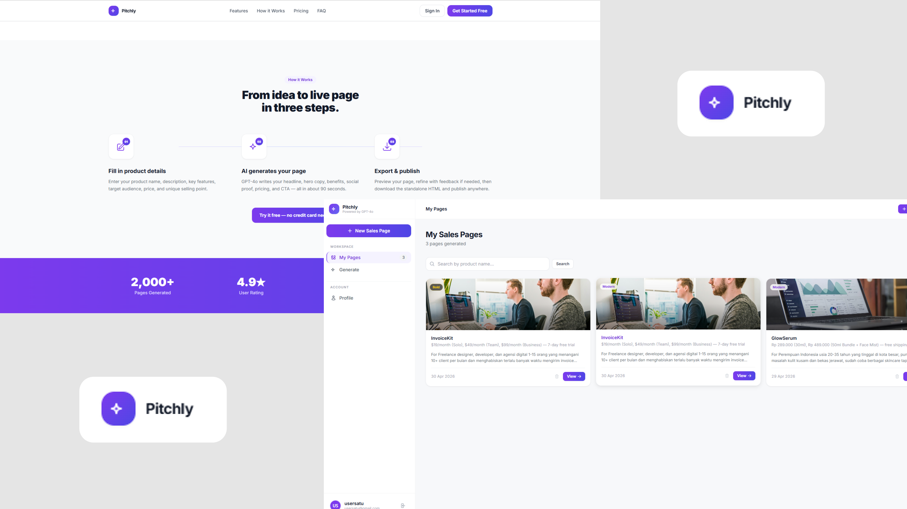

Pitchly – Simple AI-Powered Sales Page Generator

Ringkasan Project
Pitchly adalah aplikasi web yang memungkinkan pengguna membuat sales page lengkap hanya dengan mengisi form. Seluruh proses pembuatan halaman — dari penulisan copy, pemilihan gambar, hingga penyusunan layout — ditangani oleh AI. Pengguna cukup menginputkan informasi produk, dan dalam waktu sekitar 90 detik, sales page yang siap pakai sudah tersedia untuk didownload.
Latar belakang project ini berangkat dari kenyataan bahwa membuat sales page secara konvensional membutuhkan tiga keahlian sekaligus: coding untuk membangun halaman, desain untuk tampilan visual, dan copywriting untuk menulis teks yang meyakinkan. Bagi pelaku usaha kecil atau individu yang bekerja sendiri, ini berarti harus menyewa freelancer atau menghabiskan berjam-jam di page builder — keduanya tidak efisien dari sisi waktu maupun biaya.
Dalam project ini saya merancang alur kerja yang sederhana dari sisi pengguna. Pengguna mengisi form berisi nama produk, deskripsi singkat, fitur utama, target audience, harga, dan keunggulan produk, lalu memilih salah satu dari dua template desain — modern atau bold. Setelah disubmit, proses generation berjalan di background sehingga pengguna tidak perlu menunggu di halaman yang sama.
Halaman yang dihasilkan bukan sekadar template yang diisi teks. Setiap sales page terdiri dari 10 section yang disusun mengikuti prinsip direct-response copywriting — termasuk hero section, story section dengan framework PAS (Problem–Agitate–Solve), benefit cards, testimonial, pricing, FAQ, dan CTA. Seluruh teks ditulis oleh AI berdasarkan data produk yang diinputkan, bukan template statis yang sama untuk semua orang.
Sistem juga mendukung revisi. Jika hasil pertama belum sesuai, pengguna bisa memberikan instruksi perubahan seperti mengubah tone, memperkuat headline, atau menambah urgensi pada CTA. AI akan merevisi halaman sambil tetap mempertahankan konteks dari versi sebelumnya. Setiap revisi tersimpan sebagai versi terpisah — halaman asli tidak pernah ditimpa, dan seluruh versi bisa dibandingkan kapan saja.
Output akhirnya berupa satu file HTML mandiri yang bisa didownload dan di-deploy di hosting mana saja tanpa ketergantungan pada platform Pitchly. Dari sisi dampak, proses yang biasa memakan waktu berhari-hari dan biaya jutaan rupiah dipangkas menjadi kurang dari dua menit dengan biaya yang jauh lebih kecil.